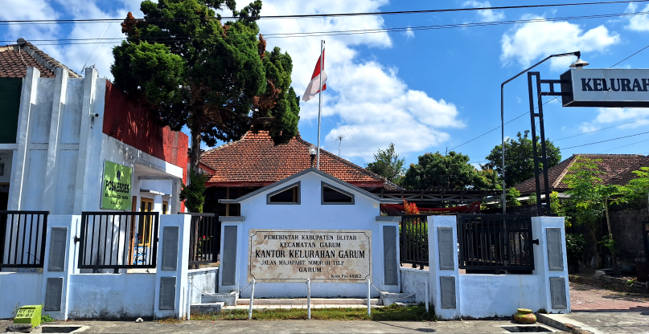

Garum adalah salah satu kota di Kecamatan Garum,
Kabupaten Blitar, Jawa Timur, Indonesia. Dalam Pararaton, Garum dikenal
dengan nama Karuman. Karuman merupakan salah satu wilayah penting pada
masa Kerajaan Majapahit. Nama ini muncul dalam beberapa prasasti dan
catatan sejarah sebagai pusat kegiatan ekonomi dan pemerintahan di
daerah tersebut. Seiring berjalannya waktu, Garum berkembang menjadi
pusat administrasi dan kebudayaan di Kabupaten Blitar.
Kelurahan ini dikenal dengan tradisi dan budaya yang kaya, termasuk
berbagai upacara adat dan kesenian lokal. Kehidupan masyarakat Garum
banyak dipengaruhi oleh sejarah panjang yang diwariskan dari generasi ke
generasi, menjadikan Kelurahan ini sebagai salah satu tempat yang
memiliki nilai sejarah dan budaya yang tinggi di Jawa Timur. Garum
memiliki lokasi yang strategis. Kelurahan ini dikenal dengan lahan
pertaniannya yang subur, mendukung tanaman padi, jagung, dan sayuran.
Mata pencaharian utama adalah pertanian dan peternakan, serta olahan
tangan. Kelurahan Garum juga memiliki potensi agrowisata yang besar.
